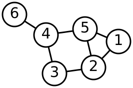
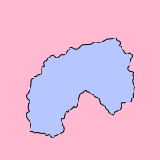

Lacuna is a two-player strategy game where the board is constructed during play. Instead of starting with a grid or hex map, players start with an empty circle. Over the course of 30 to 60 minutes, they draw colored strands inside the circle, building up a planar graph whose topology determines the score. When a region becomes completely enclosed by strands of a single player's color, it becomes a "Lacuna" and scores for that player.
Formally, a graph \(G = (V, E)\) is planar if it can be embedded in the plane \(\mathbb{R}^2\) such that no two edges intersect except at shared endpoints. The game enforces planarity as a hard constraint: strands cannot cross. The circle boundary and all placed strands together form a planar subdivision of the disk \(D^2\), and the scoring mechanism operates on the faces of this subdivision.
I designed the game and its rules from scratch. The physical version would be playable with colored pens and a printed circle, but the topology tracking and scoring would be tedious to do by hand. The digital implementation handles all of that automatically.

{kind=link}
How a turn works
At the start of each turn, the active player draws a tension token, choosing one of two options. The tension value determines how many strands the player can place that turn. They then position a node inside a region and trace paths from that node to vertices on the circular boundary, using intermediate waypoints to route around existing strands. Strands cannot cross. As the game progresses, the available space fills up and routing becomes increasingly constrained. The early game feels open and strategic; the late game feels like threading a needle.
Each placed strand adds edges and vertices to the planar graph. If a turn places \(k\) strands from a single interior node to \(k\) boundary vertices, the graph gains one new vertex (the interior node), \(k\) new edges, and potentially splits existing faces. By Euler's formula for connected planar graphs,
\[V - E + F = 2\]where \(V\) is the number of vertices, \(E\) the number of edges, and \(F\) the number of faces (including the exterior face). Each new edge that connects two existing vertices without passing through a third increases \(E\) by 1 and \(F\) by 1, since it bisects an existing face. The number of faces therefore grows monotonically as strands are placed: if the graph has \(E\) edges and \(V\) vertices, there are exactly \(F = E - V + 2\) faces. This is the quantity the scoring engine must enumerate after every move.
The game ends when no legal moves remain or when the tension token supply runs out. The planarity constraint means that, by the edge bound for simple planar graphs, the total number of edges can never exceed \(3V - 6\). In practice the game ends well before this theoretical maximum, because the geometric embedding inside a fixed circle constrains routing long before the combinatorial limit is reached.
Detecting enclosed regions
The core technical problem is determining, after each strand is placed, which regions of the circle have been enclosed and what colors their boundaries are. The strands and the circle boundary together form a planar graph. The faces of that graph (the regions between strands) need to be enumerated, and each face's boundary needs to be traced to check whether all edges belong to a single player.

{kind=link}
The theoretical foundation here is the Jordan curve theorem: any simple closed curve \(C\) in \(\mathbb{R}^2\) divides the plane into exactly two connected components, an interior and an exterior, with \(C\) as their common boundary. In Lacuna, the circular boundary is the outermost Jordan curve. Each time a player's strands form a simple closed walk within the planar graph, they create a new Jordan curve that encloses a region. A face \(f\) of the planar graph is a Lacuna for player \(i\) if every edge on the boundary \(\partial f\) belongs to player \(i\). More precisely, let \(\text{color}: E \to \{1, 2, \varnothing\}\) assign each edge to a player or to the neutral boundary. Then face \(f\) scores for player \(i\) if and only if
\[\text{color}(e) \in \{i, \varnothing\} \quad \text{for all } e \in \partial f\]where boundary edges (arcs of the circle) are treated as neutral and compatible with either player.
The face enumeration algorithm walks the planar graph using a half-edge traversal (also called the next-edge or face-tracing algorithm from the doubly connected edge list data structure). For each directed half-edge \(\vec{e} = (u, v)\), the algorithm follows the next half-edge incident to \(v\) in clockwise order around \(v\). When it returns to the starting half-edge having traced a complete boundary cycle, it has identified one face. For a planar graph with \(V\) vertices and \(E\) edges, there are exactly \(2E\) half-edges, and each half-edge belongs to exactly one face boundary, so the total work to enumerate all faces is \(O(E)\).
This computation has to be fast. Players expect to see immediately whether their move created a Lacuna. The tricky cases involve strands that share vertices, strands that touch the boundary at multiple points, and degenerate face configurations where a very small region is created between closely spaced strands. Getting the edge-traversal logic correct for all these cases took significant testing.
Rendering with SVG
The board is rendered in SVG rather than Canvas. The primary reason is hit-testing: in SVG, each strand is a DOM element with native event handling. Selecting a strand, highlighting it on hover, or detecting which region the user clicked in all come from the DOM for free. In Canvas, all of this would need to be reimplemented with manual coordinate math and spatial indexing.
Strands are drawn through waypoints using Chaikin's corner-cutting algorithm. Chaikin smoothing iteratively replaces sharp corners with smooth curves by subdividing each segment and cutting corners at 25%/75% positions. After a few iterations, the result is a smooth curve that passes near (but not exactly through) the original waypoints. This gives the strands an organic quality, like thread stretched between pins, rather than the angular look of straight line segments between points.
Multiplayer
Lacuna is played online between two players. The game state is synchronized in real time through Firebase Realtime Database. One player creates a game and receives a shareable link. The other player opens the link and joins. Firebase Anonymous Authentication assigns each player an identity without requiring account creation.
Because Lacuna is strictly turn-based (only one player can act at a time), there are no concurrency issues to resolve. The game state is a single Firebase document containing all nodes, strands, scores, and turn information. Each move is an atomic write that both clients observe in real time.
The rulebook and visual output
The repository includes a formal rulebook, written in LaTeX and compiled to PDF. Writing unambiguous game rules is a different kind of challenge from writing code. Every edge case needs to be addressed in a way that a player can understand without a computer to adjudicate.
One thing I like about Lacuna is that the finished boards are visually interesting. Every game produces a different pattern of colored curves partitioning the circle into regions. The results tend to look like stained glass or river deltas. There's an aesthetic payoff to a game where the artifact you build during play is the board itself.
Complexity
Lacuna's gameplay touches on several problems known to be computationally hard. Determining the optimal move in a two-player planar enclosure game is related to problems in the complexity class PSPACE. Many two-player combinatorial games with perfect information are PSPACE-complete to solve optimally, including generalized versions of Hex and Go. Lacuna shares structural features with both: like Hex, it involves path connectivity on a planar surface; like Go, it involves territorial enclosure.
Even the sub-problem of testing whether a given partial board admits a move that encloses a new region has connections to planar graph augmentation. The question "can player \(i\) add at most \(k\) edges to enclose a new face whose boundary is monochromatic?" requires searching over planar embeddings and is unlikely to admit a simple greedy solution. For practical play the search space is bounded by the geometric constraints of the circle, but the underlying combinatorial problem scales poorly with board complexity, which is part of what makes the game strategically rich.